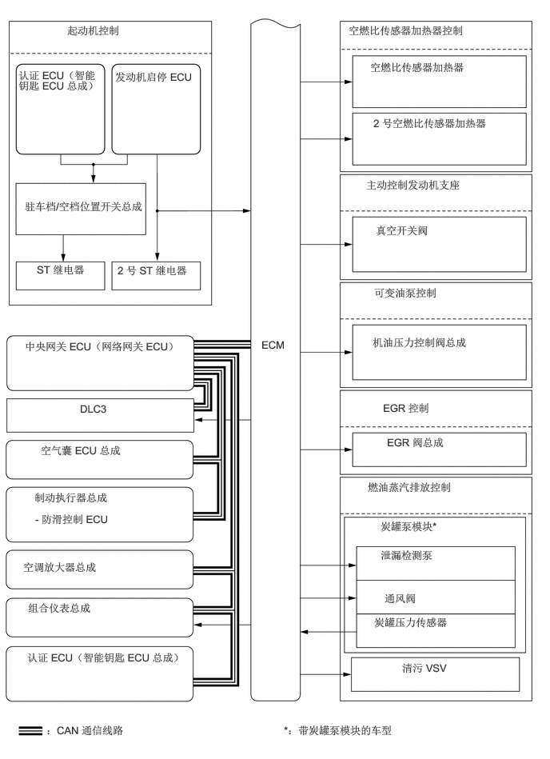

3.406,4.406 3.792,4.635
0.375,0.219
10
false
ECM
0.875,0.313 1.969,0.552
1.083,0.229
10
false
起动机控制
0.24,0.896 1.323,1.563
1.073,0.656
10
false
认证 ECU（智能钥匙 ECU 总成）
1.5,0.917 2.573,1.573
1.063,0.646
10
false
发动机启停 ECU
0.323,2.604 2.333,3.156
2,0.542
10
false
驻车档/空档位置开关总成
0.479,3.427 1.198,3.688
0.708,0.25
10
false
ST 继电器
1.531,3.438 2.563,3.688
1.021,0.24
10
false
2 号 ST 继电器
0.323,4.427 2.813,5.135
2.479,0.698
10
false
中央网关 ECU（网络网关 ECU）
1.042,5.24 1.552,5.479
0.5,0.229
10
false
DLC3
0.531,5.781 2.01,6.104
1.469,0.313
10
false
空气囊 ECU 总成
0.448,6.396 2.104,6.708
1.646,0.302
10
false
制动执行器总成
0.458,6.677 1.729,6.938
1.26,0.25
10
false
- 防滑控制 ECU
0.302,7.302 2.563,7.583
2.25,0.271
10
false
空调放大器总成
0.365,7.833 2.24,8.115
1.865,0.271
10
false
组合仪表总成
0.354,8.479 2.594,8.927
2.229,0.438
10
false
认证 ECU（智能钥匙 ECU 总成）
0.604,9.427 2.313,9.688
1.698,0.25
10
false
：CAN 通信线路
3.698,9.427 6.146,9.667
2.438,0.229
10
false
*：带炭罐泵模块的车型
4.542,0.313 6.844,0.563
2.292,0.24
10
false
空燃比传感器加热器控制
4.823,0.792 6.646,1.052
1.813,0.25
10
false
空燃比传感器加热器
4.865,1.521 6.594,1.938
1.719,0.406
10
false
2 号空燃比传感器加热器
4.771,2.323 6.635,2.563
1.854,0.229
10
false
主动控制发动机支座
4.896,2.917 6.448,3.167
1.542,0.24
10
false
真空开关阀
4.875,3.729 6.542,4
1.656,0.26
10
false
可变油泵控制
4.854,4.375 6.5,4.792
1.635,0.406
10
false
机油压力控制阀总成
4.99,5.229 5.833,5.458
0.833,0.219
10
false
EGR 控制
5.042,5.677 6.438,5.969
1.385,0.281
10
false
EGR 阀总成
4.792,6.26 6.656,6.51
1.854,0.24
10
false
燃油蒸汽排放控制
4.958,6.771 6.552,7.021
1.583,0.24
10
false
炭罐泵模块*
4.958,7.146 6.385,7.406
1.417,0.25
10
false
泄漏检测泵
5.01,7.708 5.781,7.969
0.76,0.25
10
false
通风阀
4.875,8.021 6.521,8.281
1.635,0.25
10
false
炭罐压力传感器
5.24,8.615 6.063,8.865
0.813,0.24
10
false
清污 VSV